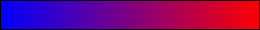
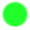

Loading...
Exoplanet Color/Temperature

Cold
Hot
Planet Size (Based On Initial View)
Null Size Val
Small
Big
Other
Null Temp Value

Temp Outlier Values
In Selection Mode
Selected Exoplanet
Link to Exo Documentation